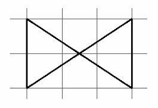
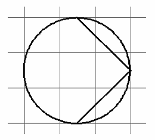
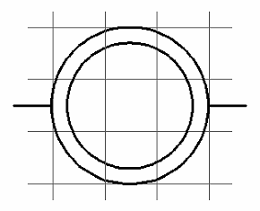
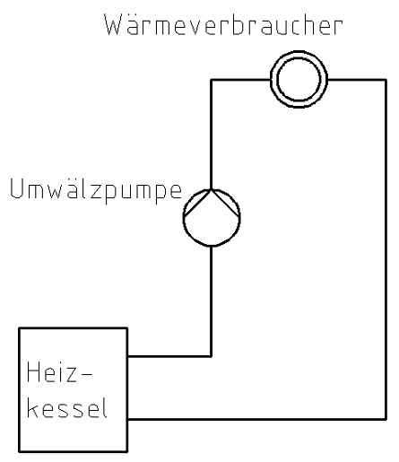
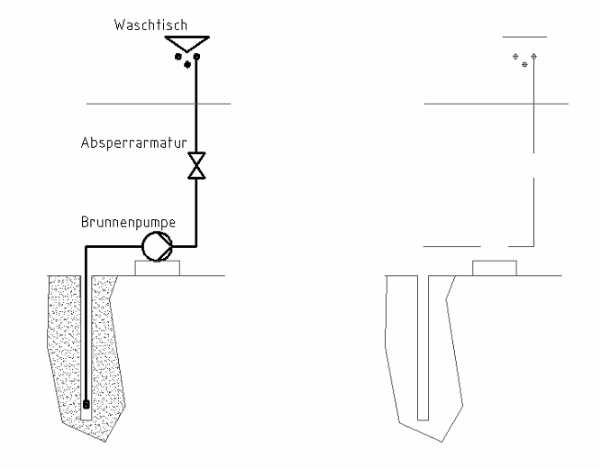

4 Sinnbilder und Kreisläufe zeichnen
Zum Zeichnen und Rechnen am Papier. Braucht Internet.
Ein Sinnbild ist ein kleines, einfaches Zeichen für ein Bauteil.
Mit Sinnbildern kann man Pläne der Haustechnik leichter lesen.
Absperrarmatur
Damit sperrt man eine Leitung ab (z. B. ein Ventil).

Umwälzpumpe
Sie befördert das Wasser in der Leitung. Die Spitze zeigt in die Richtung, in die das Wasser fließt.

Wärmeverbraucher
Das ist z. B. ein Heizkörper. Er gibt die Wärme an den Raum ab.

Zeichenaufgabe 1
✎ Am Papier
Du brauchst: kariertes Papier, Bleistift, Lineal, Zirkel.
1. Zeichne die drei Sinnbilder ab. Zähl dabei die Kästchen im Raster.
2. Schreib den Namen dazu: Absperrarmatur, Umwälzpumpe, Wärmeverbraucher.
1 Kästchen im Bild = 2 Kästchen im Heft. Die Kreise zeichnest du mit dem Zirkel.
Zeichenaufgabe 2
✎ Am Papier

Das ist der Heizungskreislauf (geschlossener Kreislauf).
1. Zeichne den Heizungskreislauf ab.
2. Fahr den Vorlauf rot nach: vom Heizkessel über die Pumpe zum Wärmeverbraucher.
3. Fahr den Rücklauf blau nach: vom Wärmeverbraucher zurück zum Heizkessel.
Zeichenaufgabe 3
✎ Am Papier

Das ist eine Brunnenanlage (offener Kreislauf). Die Brunnenpumpe holt das Wasser aus dem Brunnen zum Waschtisch.
1. Zeichne die Brunnenanlage ab (links im Bild ist die Vorlage). Rechts ist sie nur angefangen. Du zeichnest sie ganz neu in dein Heft.
2. Fahr die Kaltwasserleitung grün nach.
3. Schreib dazu: Waschtisch, Absperrarmatur, Brunnenpumpe.